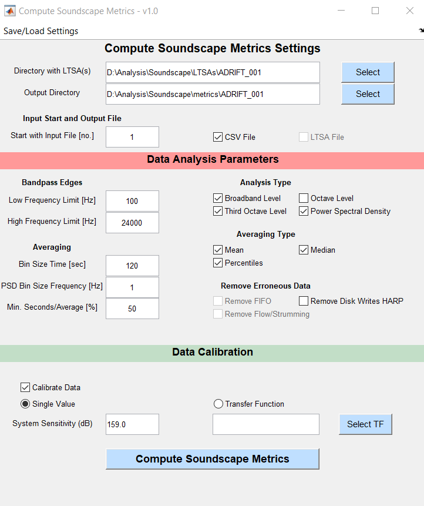

Triton Metrics
Methods Summary
Soundscape methods are aligned with SanctSound protocols as much as possible (https://sanctsound.ioos.us/)
Triton software is used for the following:
Acoustic data is decimated to 48 kHz sample rate
Soundscape long-term spectral averages (LTSAs) are calculated with a 1 Hz, 1 second resolution
The full system calibration value is calculated from the combined hydrophone and Sound Trap sensitivity
Soundscape LTSAs are used to calculate sound levels in 2 minute windows from 100-24,000 Hz, including broadband sound pressure levels, third-octave levels, and power spectral densities. Median (50th percentile), mean, and various statistical sound levels (1st, 5th, 10th,25th, 75th, 90th, 95th percentiles) are calculated for each metric.
Vessels are detected by manually scanning LTSAs with X Hz, X s resolution in 1 hour windows
Identify periods of noisy or bad data to eliminate from downstream analyses
Soundscape metrics are only calculated for drifts that used a Soundtrap model 4300 or 640 with a HTI-92WB hydrophone. In the 2016 PASCAL project, there were 13 drifts that either used a SM2, SM3 recorder, or included an array that only had HTI-96min hydrophones. These drifts do not have soundscape metrics.
Step-by-Step Instructions
Decimation of acoustic data
Most ADRIFT acoustic data is recorded at sampling rates of 384 kHz, however soundscape metrics are only calculated up to 24 kHz. To reduce processing time and data storage requirements, full bandwidth data is decimated to a sample rate of 48 kHz using a decimation factor of 8 (384,000/48,000=8).
Using the Tools menu in the Triton “Control” window, choose to decimate an entire folder of WAV files
You will be prompted to choose a folder of WAV files, and then define the appropriate decimation factor. For example, to decimate from 384 kHz to 48 kHz, use a decimation factor of 8.
Then define a folder to save the new, decimated WAV files.
The decimation process will start automatically and show a progress bar. When the decimation is complete, the progress bar will disappear. Depending on the total number of files and the required decimation factor, this process may take a few hours.
Generate soundscape LTSA
Add the soundscape remora to Triton (see Remoras menu in “Control” window), if it hasn’t already been added. Triton will need to be restarted after adding the remora for the first time.
Using the Remoras menu in the Triton “Control” window, choose to Make Soundscape LTSAs
Define the appropriate settings to generate the soundscape LTSA, including:
Input directory containing 48kHz WAV files
Output directory to save LTSA files
Output filename
Averaging Time [s]=1, Frequency bin size [Hz]=1, Length of LTSA [days]=3, Start with LTSA#=1, File type=1, Data Type=5, Data Channel Number=1
Press Run Soundscape LTSA
The LTSA generation process will start automatically and show a progress bar. When the LTSA is complete, it will load automatically. Do not be concerned if the LTSA looks strange. Soundscape LTSAs must be loaded with the Soundscape Remora to be properly viewed. This process may take a few hours.
Calculate full system calibration
The full system calibration value is calculated by the hydrophone and recorder sensitivity, both of which should be provided by the manufacturer. SoundTrap recorder sensitivities are available on the OceanInstruments website, and should be reported in units of “dB”. Hydrophone sensitivities should be reported in units of “dB re: 1V/uPa”. For example, for a HTI-96min hydrophone with sensitivity of -155 dB re: 1V/uPa, and a ST640 SoundTrap with sensitivity of -4 dB, the full system calibration value would be -159 dB e: 1V/uPa.
See ‘SysSens’ function to automatically find calibration value for each deployment based on the deployment details and inventory worksheets. While hydrophone and recorder sensitivities are generally reported as negative values, the calibration value provided to Triton should be the absolute value of the combined sensitivities (a positive value).
Calculate soundscape metrics
Using the Remoras menu in the Triton “Control” window, choose to Compute Soundscape Metrics
Define the appropriate settings to generate the soundscape metrics, including:
Directory with LTSA(s)
Output Directory for metrics
Input Start file
Low Frequency Limit [Hz]=100, High Frequency Limit [Hz]=24000, Bin Size Time [sec]=120, PSD Bin Size Frequency [Hz]=1, Min. Seconds/Average[%]=50
Check boxes for Broadband Level, Third Octave Level, and Power Spectral Density
Check boxes for Mean, Median, and Percentiles
Check box for Calibration, and insert appropriate calibration value

ADRIFT recordings were collected on a continuous or 50% duty cycle (6 min on out of every 12 minutes). Carious duty cycles were used to collect acoustic data from the 2016 PASCAL and 2018 CCES survey, with a minimum 2-minute recording time. Therefore, a 2 minute window is used to calculate soundscape metrics which can be compared across surveys.
Consistent cable strumming was observed below 100 Hz on many drifting buoy deployments, therefore the lower frequency limit for all calculated soundscape metrics was set to 100 Hz.
Detect vessels
Start Triton Logger Remora
1. Launch Triton within Matlab. Open the LTSA for the data you want to analyze.
2. In the Triton “Control” window, select the Remoras menu, choose Logger and then start a new log. You will need to re-start Triton if this is the first instance of using the Logger remora. See more info on Triton Remoras on the Marine Bioacoustic Research Collective wiki.
Log start and end time of ship acoustic events
Ships produce different noises such as impulsive signals from ship propeller cavitation or echosounder signals that can be easily identified in the LTSA and confirmed with the spectrogram.
A trained analyst viewed 1 h windows of long-term spectral averages (LTSA; Wiggins and Hildebrand (2007); 5 s time average, 100 Hz frequency bins). Once a ship was identified, 10 s spectrograms were used to confirm identification (Fast Fourier transform length 2000 points, 75% overlap). Both LTSAs and spectrograms were scanned with a brightness of 60 and a contrast of 180 for consistency across deployments. Ships were either logged as being broadband (Figure 1) or narrowband/low frequency (Figure 2). Narrowband/low frequency ship signals were fainter while broadband signals were high amplitude and had frequency content above 5kHz during the vessel’s passage.
We assumed no signals were mistaken for ships because all LTSA detections were visually verified. We also assumed negligible missed detections of high amplitude ships given the characteristics of ships that make them easy to distinguish.

Identify time periods of bad data
Scan LTSA (1s, 1 Hz resolution) with 2-hour windows, viewing frequencies between 0-500 Hz to identify time periods with noisy or compromised data quality. This review was performed as part of the initial data quality check (see more details on these methods here), and is an important step to identify time periods where noisy data prevents accurate calculations of sound levels in the environment.